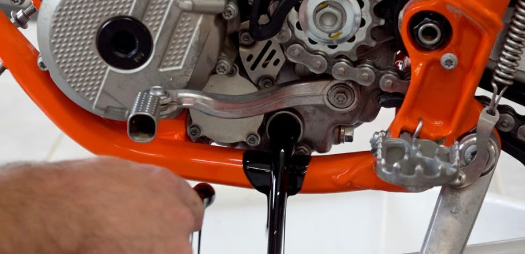
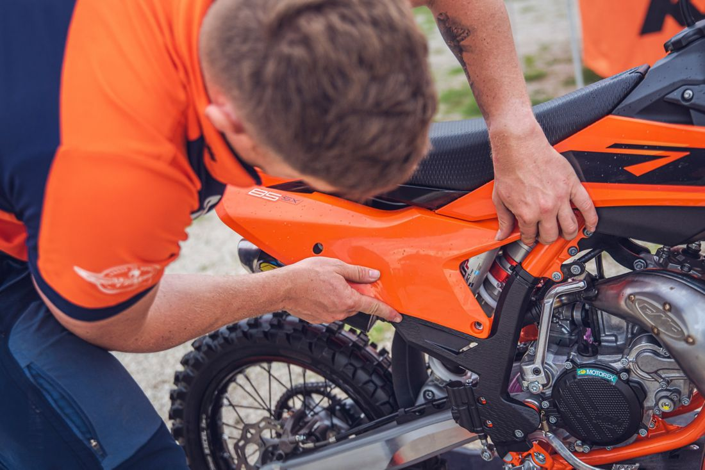

Un tagliando fatto bene allunga la vita del motore e ti evita problemi mentre sei in giro.
Cosa comprende un tagliando
In officina i tagliandi vengono fatti seguendo una lista precisa di controlli,
diversa per moto da strada, enduro e cross. Di base includono:
- Cambio olio motore con prodotto di qualità adeguato al tipo di moto.
- Sostituzione filtro olio (dove previsto) e controllo filtro aria.
- Controllo pastiglie e dischi freno, eventuale regolazione leva o pedale.
- Controllo catena, corona e pignone, pulizia e ingrassaggio.
- Verifica serraggi principali (piastre, ruote, pedane, manubrio, forcellone).
- Controllo livelli liquido freni e, se necessario, sostituzione.
Ogni quanto fare il tagliando
La frequenza cambia in base all’uso della moto:
- Uso strada: si segue di solito il chilometraggio indicato dalla casa
(es. 5.000–10.000 km).
- Enduro/cross amatoriale: meglio intervenire più spesso, in base alle ore
di utilizzo e al tipo di terreno (polvere, fango, sabbia).
- Uso agonistico: olio e controlli vanno fatti con più frequenza,
spesso ogni poche uscite o gare.
In officina il tagliando viene adattato al tipo di utilizzo reale della moto,
non solo alla teoria del libretto.
Cosa portare quando vieni in officina
- Libretto di manutenzione (se c’è) e eventuali fatture di lavori passati.
- Indicazioni su come usi la moto: strada, uscite domenicali, allenamenti, gare, ecc.
- Segnala eventuali rumori, dubbi o comportamenti strani che hai notato.
Più informazioni dai, più preciso sarà il lavoro che viene fatto sul mezzo.
Galleria tagliandi
Alcuni esempi di moto in fase di tagliando in officina.

